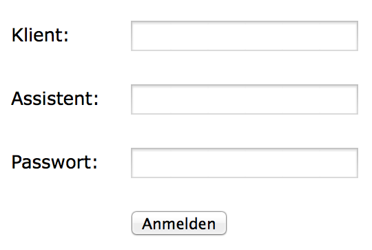
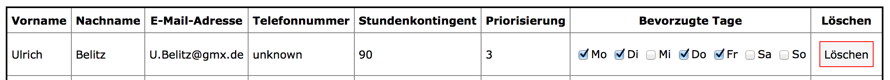
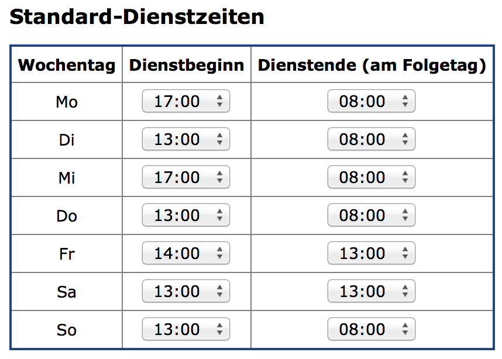

07.08.2014
- Wunsch die Bereitschaftszeiten abhängig von den Dienstzeiten des Vortages anzupassen -> umgesetzt
- Wunsch: Dienstbeginn schon um 12:00 Uhr möglich
05.08.2014
- Gespräch mit Patrick - Wunsch die Bereitschafstzeiten abhängig von den Dienstzeiten des Vortages anzupassen
- Refactoring Berechnung Bereitschaftszeiten
04.08.2014
- Code-Freeze -> Assistenzplaner.de/master ist die URL für die Veröffentlichung
- Session Variablen aufräumen
- Bezeichnungen vereinheitlicht
- Skype mit Freddy
30.07.2014
- Ausarbeitung schreiben
- Dokumentations-Gerüst erweitert
29.07.2014
- Gliederung Ausarbeitung vervollständigt - Stichpunkte notiert
- Mail an Dame vom Commit
28.07.2014
- Skype Freddy
- Gedanken zur Ausarbeitung
- Termin mit Büro des Landesbeauftragten vereinbart
24.07.2014
- Optimierung Algorithmus: Es werden 1000 Dienstpläne randomisiert erstellt und der Beste wird genommen.
- Mail an Team - Link anpssen: login.php?client=Patrick&redirect=calendarView
- eMail Adresse des Klienten in Einstellungen
- Feedback Funktion
- Angabe von Mail-Adresse bei Feedback-Funktion - Mail Adresse kommt automatisch aus den hinterlegten Daten
- Feature: Dienstplan löschen
- Standardpasswort sichtbar und editierbar
- Verifizieren, dass ToDo Manager nach Multi-Client-Umstellung noch funktioniert
- Einige Bugs im ToDo Manager und User-Management gefixt
- Impressum
- Beim Anlegen eines neuen Klienten schauen, dass nur Buchstaben und Zahlen für den Klientennamen verwendet wurden
23.07.2014
- Settings View and Saver
- Refactoring of Session-Variables
22.07.2014
- FPDF Framework eingebaut
- Dienstplan als PDF exportieren
21.07.2014
- Support-Zugang eingerichtet
- SysML Kapitel Anforderungsdiagramm gelesen
- Beginn SysML Anforderungsdiagramm
- Skype Freddy
17.07.2014
- Einarbeitung UML
- Zeitplan für verbleibende 2,5 Monate aufgestellt
16.07.2014
- Erstes UML Diagramm mit Enterprise Architect
- PHP-Code Generirung aus UML mit Enterprise Architect
- Testen Reverse-Engineering: Code -> Modell ==> in typenfreier Sprache wie PHP funktioniert das nicht gut
12.07.2014
- Skype mit Thomas
- Einarbeitung SysML
- SysML vs. UML
- Einarbeitung UML
11.07.2014
- Einarbeitung SysML
- Kritische Fehlermöglickeit beim schreiben von Assistenz-Input entfernt
07.07.2014
- Einarbeitung SysML
- Links angepasst - Farbe und Verhalten geändert
- Skype mit Freddy
05.07.2014
- Willkommens-Seite ausformuliert
- Mail-Entwurf an Prof.
- Mail an Prof geschickt
03.07.2014
- Ausarbeitung: Algorithmus Beschreibung
- Bugfix: Mailversand an Team
- Mail an Patrick mit "Ersten Schritten für das Team" -> Vorbereitung für "going live"
- Ausarbeitung: an verschiedenen Stellen Inhalt ergänzt
- Ausarbeitung: LaTeX-Template eingearbeitet und angepasst
- eMail Adressen des Teams eingetragen
01.07.2014
- Feedback von Freddy für Ausarbeitung einarbeiten
- Bugfix: Algorithums ist in Endlos-Schleife, wenn nicht genügend Verfügbarkeit im Team
- Ausarbeitung: Algorithmus Beschreibung
30.06.2014
- Beginn Einarbeitung SysML
- Skype mit Freddy
25.06.2014
- Vierter Besuch bei Patrick -> sehr positiv, nächsten Monat gehen wir "online"
20.06.2014
- Bugfix: Neues Team-Mitglied: Name darf nicht leer sein
- Bugfix: Team speichern hat Klienten-Passwort gelöscht
19.06.2014
- GUI und Funktionalität für das Anlegen neuer Klienten (Multi-Client Betrieb)
30.05.2014
- Anpassungen Login wegen Multi-Client Betrieb
- Anpassungen Navigation wegen Multi-Client Betrieb
29.05.2014
- Dokumentation wird User-Abhänig erzeugt
- Dokumentation Kalender
- Dokumentation Navigation
- Dokumentation Monats-Navigation
- Einheitlich deutsche Begriff verwendet - kein DEnglisch!
- Personalisierte Dienst-Tabelle für Assistenten
- Betreuter -> Klient
- Bereitschaftszeiten angepasst nach Input von Patrick
- Mail-Adresse umstellen auf info@assistenzplaner.de - GMail ist unzuverlässig!
- Cursor bei Klick-Feldern ändern
- Alle Buttons gegen versehentliches doppeltes Klicken verriegeln -> siehe toDoManager.js -> save()
- Multi-Client
27.05.2014
- Stichwörter Groß- und Kleinschreibung nicht beachten
- Dienstplan und Monatsplan -> standardmäßig den nächsten Monat anzeigen
- Dienstplan speichern -> letzte Änderung aktualisieren
- Dienstplan Meldung -> Alles in Ordnung -> Rechtschreibfehler korrigieren
- halbe Stunden in Stundenberechnung aufnehmen
- ToDo Manager ausblenden
- Stichwörter Trenner dokumentieren
- Bug: Team - Prio von 0 führt zur Endlosschleife
- Stundeneingaben -> Drop-Down um Fehlerquellen zu vermeiden
- Skype mit Freddy
- Bugfix ToDoManager - erledigte Aufgaben
- Erste Gedanken zur Dokumentaion
26.05.2014
- Dritter Besuch bei Patrick zu Hause -> sehr positives Feedback + einige ToDos
- ToDo Manager für Patricks Team nicht geeignet
22.05.2014
- Gedanken zum Datenbank-Layout
- Entscheidung: Umsetzung Datenbank erstmal unwichtig -> nach hinten verschoben
- Applikation läuft auch mit komplett leerem Daten-Ordner rund -> Vorraussetzung für Multi-Team-Betrieb
21.05.2014
- Team-Datenbank auf Server angelegt
- Einarbeitung PHP und MySQL
- Assistenten Feedback für Juni eingetragen -> Dienstplanerstellung ist kein Problem
- Kalender - default-mäßig den nächsten (nicht den aktuellen) Monat anzeigen
- Problem: validateString() funktioniert in Firefox, aber nicht in Safari und Chrome -> Lösung: contains(...) durch
indexOf(...) ersetzen
- Recherche PHP und SQLite + Test-Projekt erfolgreich
- Überlegungen zu der Frage: "Wie kann man mehr als nur einen zu Betreuenden abbilden?"
- SuperUser, falls noch gar kein User angelegt ist
20.05.2014
- ToDo Manager: Date-Picker Entwurf
- Recherche jQueryUI Datepicker + Test - Problem: Anpassungen des DatePickers nicht geschafft, wegen zu wenig
Kenntnis von jQuery
- DatePicker in ToDo-Manager eingebaut
- Domain Assistenzplaner.de gesichert
- Einrichten des FTP-Zugangs
- Problem: Auf Server war PHP 5.3 aktiviert - Login hat nicht funktioniert - Lösung: Update auf PHP 5.5
- FTP-Upload der aktuellen Seite auf die Domain Assistenzplaner.de mit
CyberDuck
- FTP-Upload direkt aus PhpStorm heraus
- Recherche Assistenz

15.05.2014
- ToDo Manager: Eingabemaske für neue ToDos
- ToDo Manager: Anlegen neuer ToDos
- ToDo Manager: Eingabemaske für neue ToDos dynamisch, je nach Eingaben
14.05.2014
- ToDo Manager: Wiederholung von Aufgaben (inklusive UnDo)
- ToDo Manager: Speichern und Archivieren der erledigten Aufgaben
- ToDo Manager: Darstellung der Wiederholungen
- ToDo Manager: Test Eingabemaske neue ToDos
13.05.2014
- Einarbeitung Objektorientiertes
JavaScript
- Javascript Date-Objekt um Funktionalität erweitert
- Entscheidung: fast alles vom ToDo-Manager muss in JavaScript programmiert werden, da viel dynamisch auf der
Client-Seite passieren muss
- Programmierung ToDo Manager
12.05.2014
- Erste Gedanken zum ToDo-Manager
- Start Implementierung ToDo-Manager
- Skype mit Freddy
- Toodledo anschauen
11.05.2014
- Bemerkungen von Patrick zum Monat (die per Mail verschickt werden) auch im Kalender für Assistenten sichtbar
- Notes Patrick -> Kaufmännisches Und verbieten
- Bemerkungen bei Eingabe der Daten - Möglichkeit für Assistenten noch mehr Informationen zu liefern
10.05.2014
- Team-Tabelle - Input Elemente immer sichtbar - sonst ist es zu buggy!
- alle input-Elemente auf '&' prüfen
- Private Notizen analysieren nach Stichwörtern z. B. FCB, Julia, PR-Sitzung -> diese Stichwörter können in
Team-Tabelle angegeben werden und gehen in das Scoring des Dienstplan-Algorithmus ein
- User-Story 'Als Assistent möchte ich eine Möglichkeit haben Termine zu favorisieren.' abgearbeitet
- Assistenz-Eingabe: neben gut/schlecht auch ein okay bzw. notfalls
- Bedingte Formattierung bei Stundenübersicht
- Bemerkungen beim Monatsplan - Möglichkeit für Patrick noch mehr Informationen zu liefern
09.05.2014
- Mail an Team verschicken
- Problem: GMail SMTP Timeout -> später nochmal versuchen
- MonthNavigation -> Monats-Navigation für MonthPlan, Calendar und Roster
- Absicherung der Seiten verbessert + Meldung "Zugang nicht erlaubt!"
- Login Rückmeldung verbessert
- Ausarbeitung: Grobe Struktur überlegen + Inhaltsverzeichnis definieren
- Stundenkontigent nur Zahleneingaben erlauben
- Extrem frustige Server-Session -> alles geht wieder!
- GMail SMTP geht wieder!
- 23:06 Feierabend!!!
08.05.2014
- User-Login: Multi User
- User-Login: Datei mit Benutzern und Passwort
- User-Login: Passwort verschlüsselt abspeichern
- User-Login: Passwort ändern abgeschlossen
- User-Login: Login-Name in Team-Tabelle
- User-Login: Login-Name in Team-Tabelle muss eindeutig sein
- User-Login: Neues Team-Mitglied -> Account mit Standard-Passwort anlegen
- User-Login: Wenn Standardpasswort, dann User bitten ein neues Passwort zu erstellen
- User-Login: Team-Mitglied wird in Team-Tabelle gelöscht -> Account löschen
- User-Login: Administrator-Account für Patrick
- User-Login: Developer Account für mich
- User-Login: Passwort zurücksetzen für Admin
- User-Login: index.php Inhalt abhängig vom eingeloggten User
- User-Login: rosterView.php umbauen
- User-Login: calendarView.php umbauen - Daten von user laden
- User-Login: Team-Mitglied hinzufügen - "verbotene" Login-Namen wie developer oder $Settings->adminName
- User-Login: AJAX
- develop-Account -> erweiterte Ausgaben sichtbar
- Test auf Server -> Problem: PHP 5.3 zu alt für Passwort-Funktionen -> Upgrade auf PHP 5.5 -> Apache geht gar
nicht mehr - kommt immer '404 not found'
- Personenbezogene Dinge nicht mehr auf Vorname sondern auf Login-Name (dieser ist unique!) beziehen -> Roster
etc.
07.05.2014
- Optimierungen am vierten Algorithmus - Arbeit am Algorithmus erstmal abgeschlossen.
- User-Login: Alle Seiten absichern
- User-Login: User Informationen + Logout-Button auf allen Seiten bereitstellen
- User-Login: Login-Seite schöner gestalten
- User-Login: Beginn Passwort ändern

06.05.2014
- Sortierung des Arrays bei gleichem Score "randomisieren" um Blockbildung bei den Diensten zu verhindern
- Optimierungen am vierten Algorithmus
04.05.2014
- Algorithmus: Daten von Team dynamisch
- Refactoring: Algorithmus 1 und 2 in Klasse Roster gezogen
- Team: Wochentage im Format: 1,0,1,... abspeichern
- Dritte Version Algorithmus mit Berücksichtigung der Wochentage
- Beginn Vierte Version mit globalem Scoring und Berücksichtigung des Stundenkontigentes
03.05.2014
- Refactoring: Assistance Input
- Refactoring: Dienstplan-Tabellen
- Refactoring: readFromFile() in Konstruktor der Klassen gepackt
- save assistant input in other way: 0;1;0;1;2;4;... -> better performance of algorithm
02.05.2014
- Refactoring: Monatsplan
- require durch require_once austauschen
- Refactoring: Kalender
- Refactoring: Default Times
- Beginn Refactoring: Dienstplan
01.05.2014
- Einarbeitung FreePDF zur Erstellung von PDFs
- Einarbeitung Objektorientierung in PHP abgeschlossen
- Erste PHP-Klasse entwerfen
- Refactoring: Sinnvolle Klassen definieren und implementieren, Schwerpunkt Team!
30.04.2014
- Arbeit anmelden
- Zweiter stupider Algorithmus, der einen Dienstplan erstellt mit Rücksicht auf allgemeine Vorlieben des Klienten,
ohne Rücksicht auf Stundenkontingente.
- Einsicht: weitere Versionen des Algorithmus mit mehr Intelligenz verlangen ein Refactoring des bestehenden
Codes!
29.04.2014
- Erster ganz stupider Algorithmus, der einen Dienstplan erstellt, ohne Rücksicht auf Stundenkontingente oder
Vorlieben des Klienten
- ToDo List - Important Items are colored
27.04.2014
- Mail Versand mit Hilfe von PHPMailer und GMail-Account AssistenzPlaner@gmail.com
- Probleme mit Sonderzeichen in Text-Eingabe-Feldern erkannt
- htmlspecialchars testen
- Sonderzeichen-Problem analysieren und beheben
- Dienstplan - Letzte Änderung sichtbar
- BugFix: Dienstplan - Stundenübersicht: Fehlermeldungen, wenn Person nicht in Team-Liste enthalten
- Kalender: Warnung, wenn nicht genug Leute an einem Tag können
- Documentation "Framework" einbauen
- Allererste Überlegungen zum Algorithmus
26.04.2014
- Die Besprechungen mit dem Klienten digitalisieren
- monthPlan.php kann auf Default-Zeiten zugreifen
- Kontaktaufnahme Saphira-Team wegen Problem mit Mail-Versand
- Buttons einheitlich dem System-Standard angepasst
- Alle englischen Sätze und Begriffe in der Oberfläche ins Deutsche übersetzt
- Beginn Einarbeitung Objektorientierung in PHP
25.04.2014
- Team-Tabelle erweitert
- Team-Tabelle speichern
- Team-Tabelle laden
- ToDo HTML Seite erstellen
- User-Stories als HTML Seite
- index.php überarbeiten -> Links auf alle verfügbaren Seiten
- Bisherige Dokumentation in HTML überführen
- Zweiter Versuch "Mail-Versand per PHP" gescheitert - evt. mal mit PHPMailer versuchen
- Stundenkontigent in Dienstplan anzeigen - zusätzlich eine prozentuale Angabe
- Standard-Zeiten Dienstplan konfigurierbar machen


24.04.2014
- Öffentliche Notizen werden im Kalender als Tabelle angezeigt
- Öffentliche und private Notizen werden im Dienstplan angezeigt
- Git-Repository bei GitHub angelegt und eingecheckt
- Problem: initial dummerweise die Settings von PhpStorm eingecheckt - die ändern sich aber ständig!
- .gitignore erstellt
- LaTeX Vorlage erstellt
- LaTeX Paket für gute Quellcode-Formatierung gefunden: listings
- Entwurf editierbare Team-Tabelle
- Team-Mitglieder löschen
- Neue Team Mitglieder hinzufügen

23.04.2014
- Nachbereitung Input Patrick
- Stundenübersicht der Assistenten
- Monats-Plan-Tabelle als genauere Möglichkeit für Patrick die Dienste zu planen
- Speichern und Laden der Monats-Plan-Tabelle mit AJAX
- Dienst-Zeiten werden auch im Kalender angezeigt
- Speichern des Kalenders überarbeitet - jetzt auch mit AJAX, keine versteckten Input-Element mehr
- Master-Mode aus Kalender rausgeschmissen, da nicht mehr benötigt


22.04.2014
- AJAX Test mit POST-Parametern - Vorbereitung für Speichern des Dienstplans auf dem Server
- Roster kann gespeichert werden - mit Hilfe von AJAX
- Roster kann geladen werden
- Besuch bei Patrick - gemeinsame manuelle Dienstplanerstellung für den Mai mit Hilfe meiner Software - hat anstatt
4-5 Stunden nur eine knappe Stunde gedauert (inklusive Erklärungen und Übertragen in Excel)
- Feedback von Patrick war sehr positiv - schon jetzt stellt die Software eine Erleichterung für ihn da
- In der Dienstplan-Tabelle werden die Überschriften wochenweise wiederholt für bessere Lesbarkeit
21.04.2014
- Roster kann die Parameter Jahr und Monat übergeben werden
- Refactoring von doppeltem Code - DRY Don't repeat yourself
- Problem: += bei Strings gibt es in PHP nicht - das Pendant ist .=
- JavaScript Funktion die client-seitig den Dienstplan überprüft, dass es genau EIN Dienst und genaue EINE
Bereitschaft gibt
- Skype mit Freddy
19.04.2014
- Darstellung der möglichen Termine als Tabelle
- Manuelle Dienstplanerstellung (per Klick) möglich
18.04.2014
- Einarbeitung PHP-Forms mit W3Schools
- Erstellung PHP Form mit Eingabe des Namens, Verstecktes Feld mit möglichen Daten (was mit JavaScript befüllt
wird)
- Speichern der eingegebenen Daten als Text-File auf dem Server
- Problem: Text-File wird nicht auf Server gespeichert (beim lokalen Test funktioniert es) - Lösung: Rechte auf
Server mussten angepasst werden - sudo chmod -R 777 UserInput
- Calendar.php von außen parametrierbar gemacht mittels GET - z. B. calendar.php?year=2014&month=4
- index.php -> automatische Weiterleitung auf calendar.php mit nächstem Monat
- Möglichkeit für Patrick freie Tage zu markieren -> master-Mode
- Freie Tage werden den Assistenen angezeigt
- Versuch Mailversand leider gescheitert

17.04.2014
- Einarbeitung PHP mit W3Schools
- Implementierung HTML-Kalender mit gut/schlecht Terminen in PHP
- Hochladen des Kalenders auf den Server
- Test auf iPhone, iPad und Desktop
16.04.2014
- PhpStorm runtergeladen und installiert
- PHP Version in PhpStorm eingerichtet
- Chrome + Extension installiert, damit ich mit PhpStorm debuggen kann
15.04.2014
- Anmeldung Masterarbeit
- Experiment HTML-Kalender mit gut/schlecht Terminen
- Erstes Skype-Gespräch mit Freddy
14.04.2014
- Gespräch mit Patrick bei ihm zu Hause
Vorarbeiten ohne Datum
- Server organisiert
- Server eingerichtet (Apache, PHP, Samba-Share)
- Titel überlegt
- Recherche Sturzerkennung
- Weitere Recherche Hilfsmittel für Behinderte Menschen
- Erste Besprechung mit Patrick
- 2 Besprechungen mit Prof. Mahr